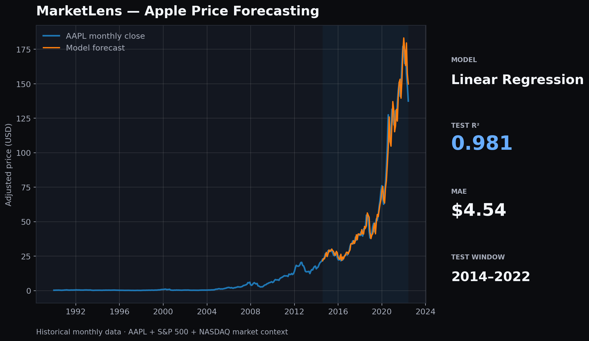

1, 2, 3, 6 and 12-month market lags plus AAPL moving averages and volatility features.
PERSONAL PROJECT · INTERACTIVE ML · 2026
MarketLens — Interactive Forecast Lab
A stock-market prediction experiment you can actually run. The browser replays my hold-out AAPL forecasts month by month, reveals the real price after each prediction and checks whether the model got the market direction right.

Historical data1990–2022 monthly
Hold-out replay95 unseen months
ModelLinear regression
InteractionRun · Step · Reset
LIVE DEMO
Press Run and watch the forecast algorithm work through unseen months.
The blue prediction is generated from the trained model output. The actual price is then revealed so you can see the error instead of only seeing a final score.
Loading historical hold-out predictions…
Month—
Predicted—
Actual—
Direction check—
Model predictionActual pricePrevious month
01 / PROJECT SCOPE & PROBLEM
Can historical market behaviour forecast Apple’s next monthly price?
I wanted a prediction project that looked beyond a static accuracy screenshot. The model is tested chronologically on future months and the portfolio lets a visitor replay those forecasts interactively.
The feature set uses lagged AAPL, S&P 500 and NASDAQ values plus moving averages and rolling volatility. All inputs are past-looking to avoid target leakage.
02 / MY ROLE & SOLUTION
I built the data pipeline, regression model, hold-out evaluation and browser replay.
The first 75% trains the model; later months remain untouched until testing.
JavaScript loads the exported hold-out predictions and reveals model versus reality one month at a time.
I compare MAE and R² with a naive previous-month baseline and separately test direction accuracy.
03 / OUTCOME & RESULTS
The price-level fit is strong; the trading-direction signal is not.
The hold-out regression reached an R² of 0.981 and MAE of $4.54. But the previous-month baseline MAE is $4.59, while direction accuracy is only 49.5%. That limitation is intentionally visible in the live replay.
Test R²0.981
Model MAE$4.54
Direction accuracy49.5%
Why I kept the weak result
A portfolio prediction project is more credible when it shows where the model fails. High R² on stock price levels does not automatically equal a profitable trading system.
Educational prototype only — not financial advice. Historical sample data ends in 2022.